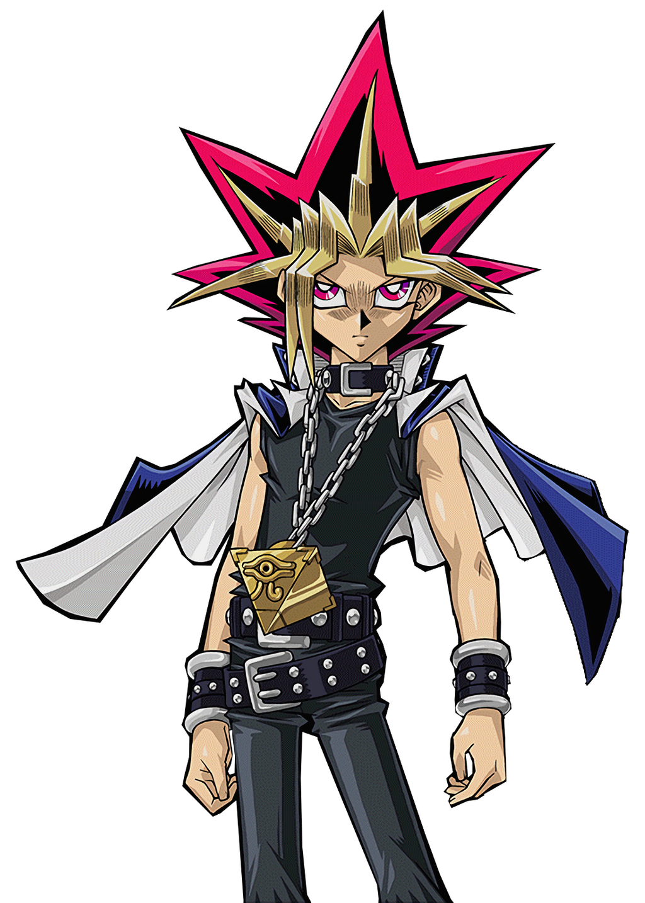

Después de que el joven Yugi Muto resolviera el Rompecabezas del Milenio,
Yami Yugi reside en la mente de Yugi y toma posesión de este cuando Yugi
y sus amigos están en peligro. Después de que Yugi se hiciera plenamente
consciente de la existencia de Yami Yugi, Yugi es capaz de intercambiar
voluntariamente con Yami Yugi el control de su conciencia.
Yami Yugi surge como un justiciero cuando Yugi y sus amigos se encuentran en aprietos.
Es un poco reservado, ya que al comienzo no le revela su existencia a Yugi o a sus amigos.
Después de que Yugi admite pensar que "otro Yugi" existe dentro de él, sus amigos toman
conciencia de su existencia y lo aceptan como un amigo.
Yami Yugi también es sabio e inteligente. Él conoce todas las reglas y detalles de cómo se
juega el Duelo de Monstruos. Cabe destacar que, según él mismo, ha sido conocido por muchos
nombres a lo largo de su milenaria existencia en el mundo, que posee gracias al Rompecabezas
del Milenio, y por lo visto, no sólo tiene de su parte su sabiduría natural, sino también el
aprendizaje obtenido gracias a años de experiencia en tratar con villanos, que afirma haber
tenido a lo largo de los siglos; gracias a esto, Yami Yugi posee una facilidad especial para
acabar con las tretas y jugadas deshonestas de quienes se han enfrentado a él.
Él es un duelista experto que emplea cartas y habilidades muy especiales;
el "Mago Oscuro" es el monstruo en el que más confía.